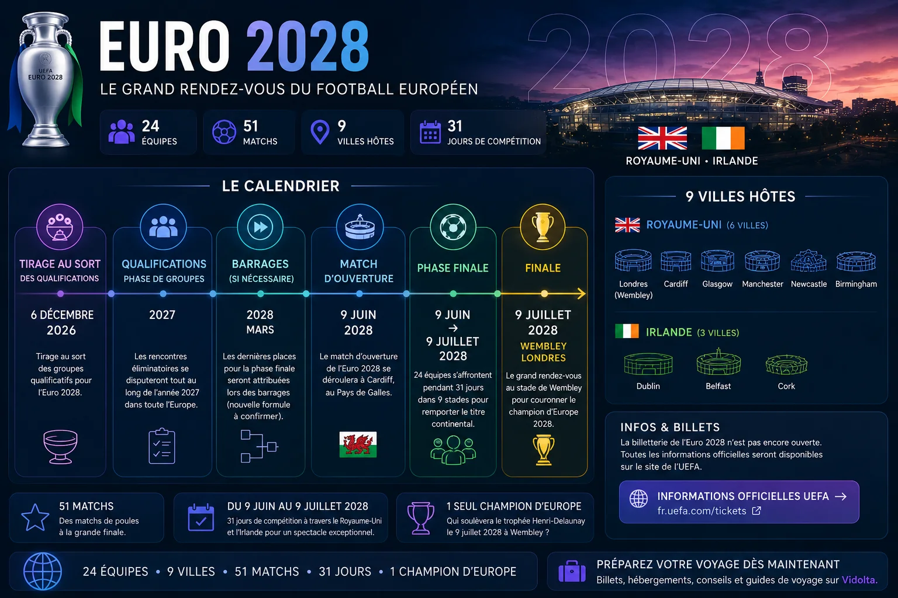
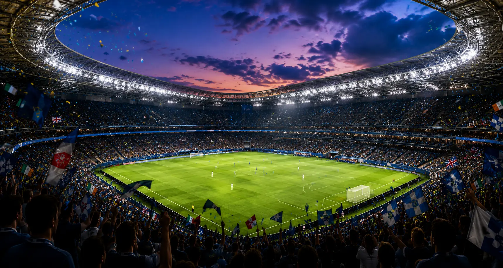

⚽ Euro 2028
Préparez votre voyage pour l'Euro 2028 :
51 matchs, 24 équipes et 8 villes hôtes à travers le Royaume-Uni et l'Irlande.
Un mois de football à travers le Royaume-Uni et l'Irlande.
De Londres à Dublin, en passant par Glasgow et Cardiff.
Les meilleures sélections européennes réunies pour le tournoi.
Bientôt disponible.

La billetterie de l'Euro 2028 n'est pas encore ouverte. Les informations concernant les billets pour les différentes phases du tournoi seront ajoutées dès leur disponibilité.
🎟️ Informations officielles UEFA →Le tirage au sort des qualifications pour l'Euro 2028 est programmé pour le 6 décembre 2026. Il déterminera la composition des groupes qualificatifs.
La phase de groupes des qualifications se déroulera tout au long de l'année 2027. Les sélections européennes tenteront de décrocher leur place pour la phase finale.
La phase finale de l'Euro 2028 se déroulera du 9 juin au 9 juillet 2028 au Royaume-Uni et en Irlande, avec 24 équipes engagées dans la compétition.
L'Euro 2028 se déroulera du 9 juin au 9 juillet 2028 au Royaume-Uni et en Irlande.
Le tournoi réunira 24 équipes pour 51 matchs organisés dans 9 stades. Le match d'ouverture se disputera à Cardiff, tandis que les deux demi-finales et la finale auront lieu à Wembley, à Londres.
L'Euro 2028 se déroulera en Angleterre, en Écosse, au pays de Galles et en Irlande. Retrouvez les villes hôtes, les stades, le calendrier des matchs, les informations sur la billetterie et les conseils pour organiser votre séjour.
Avec 24 équipes, 51 matchs et 8 villes hôtes, l'Euro 2028 permettra de combiner football et découverte de plusieurs grandes destinations britanniques et irlandaises.
Retrouvez ici les matchs de l'équipe de France, les villes où joueront les Bleus et les informations concernant les billets dès que le calendrier et les qualifications permettront de connaître leur parcours.
🇫🇷 Calendrier et billets bientôt disponiblesWembley accueillera notamment les deux demi-finales et la grande finale de l'Euro 2028.
Découvrir la ville→Une ville profondément liée à l'histoire et à la culture du football anglais.
Football, musique et ambiance populaire au bord de la Mersey.
Une ville passionnée de football qui accueillera des rencontres à St James' Park.
La deuxième plus grande ville d'Angleterre accueillera des matchs à Villa Park.
La capitale galloise accueillera le match d'ouverture de l'Euro 2028.
La grande ville écossaise accueillera le tournoi dans l'emblématique Hampden Park.
La capitale irlandaise mêlera football, pubs et ambiance festive pendant l'Euro.
Retrouvez les matchs des Bleus dès que leur qualification et le calendrier du tournoi seront connus.
Finaliste des Euros 2020 et 2024, l'Angleterre évoluera à domicile et sera particulièrement attendue.
Championne d'Europe 2024, l'Espagne pourrait défendre son titre lors de l'Euro 2028.
Londres — deux demi-finales et finale de l'Euro 2028.
Londres — l'un des stades les plus modernes d'Europe.
Manchester — l'un des grands rendez-vous anglais du tournoi.
Liverpool — nouveau stade situé sur les docks de Bramley-Moore.
Newcastle — stade emblématique situé au cœur de la ville.
Birmingham — l'un des stades historiques du football anglais.
Cardiff — théâtre du match d'ouverture de l'Euro 2028.
Glasgow — stade historique de l'équipe nationale écossaise.
Dublin — principal stade irlandais de la compétition.
Anticipez votre hébergement à proximité des stades, des transports et des centres-villes pendant l'Euro 2028.
Londres, Manchester, Liverpool, Newcastle, Birmingham, Cardiff, Glasgow et Dublin accueilleront des supporters venus de toute l'Europe pendant un mois de compétition.
🏨 Trouver un hébergement pour l'Euro →L'Euro 2028 se déroulera du 9 juin au 9 juillet 2028.
La finale se déroulera au Wembley Stadium de Londres le 9 juillet 2028.
24 sélections participeront à l'Euro 2028.
Londres, Manchester, Liverpool, Newcastle, Birmingham, Cardiff, Glasgow et Dublin accueilleront les rencontres du tournoi.
La billetterie n'est pas encore ouverte. Les informations seront ajoutées dès que les ventes de billets pour l'Euro 2028 seront disponibles.

Préparez votre voyage, découvrez les villes hôtes et vivez l'ambiance de l'Euro 2028 à travers le Royaume-Uni et l'Irlande.